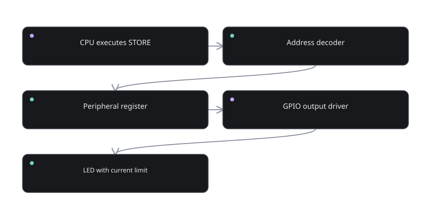

Interactive circuit laboratory 09
Seven-segment display
Toggle segment lines or choose a decimal digit; see a hardware-style display.
Prediction before clicking
A seven-segment digit is formed by a specified selection of individual light segments.
Loading interactive controls…
What the simulator is showing you
A seven-segment digit is formed by a specified selection of individual light segments.
Try to predict the next output before changing the input. A prediction is evidence that you understand the mechanism. If the result surprises you, trace the bit values or the stored state explicitly.

Go deeper into the explanation
These experiments are simplified teaching models. The rules are intentional and inspectable, but they do not simulate transistor propagation delay, power consumption, or real processor pipeline details.